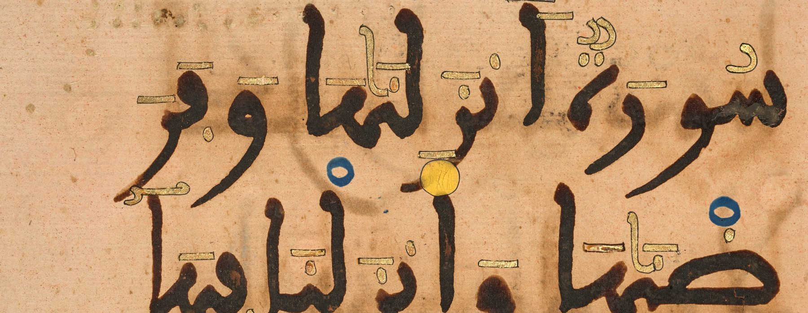

صفحة لكل عصر
في كل صفحة جدول بحال المصاحف، وخط زمني على عهود الحكام، وبطاقات فيها عينات مقرَّبة من الكتابة، ووضع عرض للتقديم.
مصاحف الأدارسة
لا يُعرف مصحف مؤرخ من هذا العهد. وفي خزانة القرويين قطع مصاحف بالخط العباسي القديم من نحو القرن الرابع الهجري.

مصاحف المرابطين
مصحف المرية (534هـ) بخط أحمد بن غلندُه، ومصحف ميونخ (533هـ) بتذهيب زكريا القرشي وعلامات وقفه باللازورد.

مصاحف الموحدين
ربعة المرتضى بخط يده، ومصحف الأمير أبي يعقوب بمراكش، ومصاحف سبتة وبلنسية بأسماء نساخها، ومصحف إشبيلية في ميونخ، والمصحف الوردي.

مصاحف بني مرين
ربعة أبي الحسن بخط يده في الأقصى، ومصحف أبي يعقوب يوسف في ميونخ وخاتمته بالذهب، ومصاحف السلطان المفقودة إلى الحرمين.
مصاحف الوطاسيين
عهد قلّما عُرف منه مصحف مؤرخ مدروس. وفيه وضع الهبطي وقفه الذي سارت عليه المصاحف المغربية، ومنه المصحف الأخضر ومصحف حُبّس بفاس سنة 949هـ.

مصاحف السعديين
مصاحف خزائن الأميرة مريم والأمير محمد بن عبد القادر والسلطانين الغالب والمنصور، ومصحف المسفِّر السفياني بفاس، ومصاحف الإسكوريال من محيط زيدان.
مصاحف العلويين
مصحف الأمير علي (1142هـ) في القاهرة، ومصاحف الناسخة عائشة التكية، وربعة القندوسي (1266هـ) في مكناس، وأول مصحف طُبع بالحجر في فاس.
كل المصاحف على خط واحد
الأشرطة مدد الدول، والعلامات المصاحف المدرجة في الصفحات الجاهزة. العلامة الممتلئة مصحف باقٍ، والمفرغة مفقود. اضغط على علامة لفتح بطاقتها.
ماذا يدخل في الدليل؟
شرط القائمة الأولى في كل عصر
- أن يكون تاريخ نسخ المصحف مذكوراً صراحة في خاتمته أو وقفيته.
- أن يُعرف صاحبه: الناسخ، أو من كُتب له أو برسم خزانته.
- أن يثبت أنه نُسخ في بلاد تلك الدولة.
وفي كل صفحة قسمان آخران: مصاحف ذكرتها المصادر ثم ضاعت، ومصاحف مشهورة تقف على حافة الشرط، مع بيان ما ينقصها.
العينات
العينات مقاطع مقرَّبة من الكتابة نفسها، مأخوذة من المصاحف المرقمنة في مكتباتها، أو من صور منشورة بترخيص مفتوح. أما المصاحف التي صورها محفوظة الحقوق فنحيل إلى مواضع نشرها.